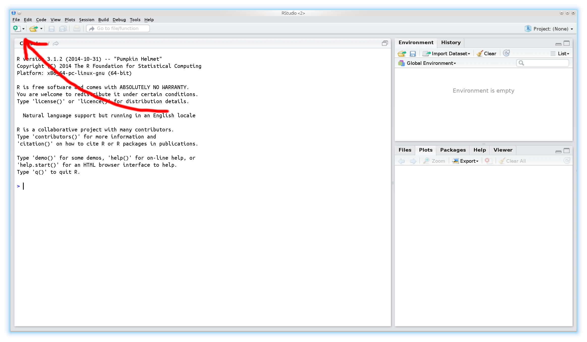

Introduction to R
Daniel Fischer
Natural Resources Institute Finland, Green Technology
Introduction
Overview
- Introduction
2.
History of R
R was started by Ross Ihaka and Robert Gentleman (the ”R & R’s” of the University of Auckland) in 1992.
R is an environment and language for data manipulation, calculation and graphical display.
R is published under GNU licence. This means it is an open source program and is distributed for free.
R can be seen as an implementation or dialect of the S language. S was developed by Becker and Chambers 1984.
The origin of the name is not known anymore (although there are obvious possibilities...).
Why to use R?
It is easy. Compared to real programming languages, R has a simplified syntax that can be used without big learning efforts.
It is open source. This means you can alter or check every piece of code (or hope at least that someone else does it...).
It is friendly. Usually the mailing lists (”Rhelp”) or online discussion forums (e.g. 'StackOverflow') are fast, friendly and helpful.
It is an universal tool. Usually there is a function in R for everything, or if there isn’t, soon there will be.
Why not to use R?
It is difficult. Compared to graphical-interface based tools like Excel a console might be shocking and repellent.
It is open source. This means, you have to trust the functions are correct - but noone gives you a warranty for this. Use it on own risk!
It is hostile. Mailing lists (”Rhelp”) or online discussion forums (e.g. 'StackOverflow') don’t like reocurring questions or questions showing no own efforts to solve a problem.
It is static. These days the figures are too static compared to other, competing languages like Matlab. You hardly can interact with created figures.
It is slow. Compared to real programming languages, R is slow (the price for being easy...), but C,C++ and other languages can be included into R programs to boost the speed.
Where to get R?
R is pre-compiled available for every common operating system, like Windows, Linux and Mac , and also for 32 and 64bit.
It can be downloaded from the CRAN (”Comprehensive R Archive Network”) webpage: http://cran.r-project.org.
Usually there are 2-3 major updates per year.
Linux user that use the apt package system, can include the CRAN server into it and receive those updates then automatically.
On CRAN are also thousands of additional extensions (”packages”) available.
The Bioconductor projects offers on top of that also hundreds of packages specialized for genomic data analysis.
How does R look like?

How to use a console?
The symbol that 'waits' for the input is usually the > sign.
One usually types the command there and sends it to the interpreter by pressing the Return key.
If a command line starts with + instead of > the interpreter expects further input.
Common reason for this are still open parantheses or quotations.
A history of the last commands is accesible using the arrow keys ↑↓.
The console is case-sensitive.
How to start?

How to start?

The script window
Using the console is alright for simple commands, but as soon as you apply a sequence of commands it gets messy
For larger projects (e.g. analysing datasets) it is much more convenient to write and run a script.
This has the advantage that the commands can easily be stored, changed and distributed.
It is much easier to keep the overview over the project.
It is easier to prepare the script and run it then as whole.
Copy+Paste for similar tasks
A typical workflow in R
Open the data with a (good...) text editor or Excel and inspect its properties:
a. Is the first line a header-line?
b. What is the separator between the columns?
Import the data to R
Apply some data transformation and calculate desired statistics
Visualize the results
Store all results